Movie
41 outputs on 128², to t = 1.56. Left to right: AREPO moving mesh, Powell/HLLD; AREPO static mesh, Powell/HLLD. From the sweep's own runs, which kept every output on this grid.
Double Harris sheet with the GEM perturbation: an X-point forms and flux reconnects through each code's numerical resistivity (no Hall term, no explicit η). Reconnected flux vs Ωᵢt and the current sheet at the X-point separate the methods; the X-point is also where ∇·B cleaning is most stressed.
41 outputs on 128², to t = 1.56. Left to right: AREPO moving mesh, Powell/HLLD; AREPO static mesh, Powell/HLLD. From the sweep's own runs, which kept every output on this grid.
Periodic unit box with two Harris sheets, at  and
and  . Lengths are in units of , so and .
. Lengths are in units of , so and .
 , run to , that is .
, run to , that is .
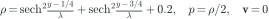
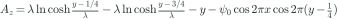
: away from the sheets , reversing across each one
No Hall term and no explicit resistivity: reconnection runs on each code's numerical resistivity.
GEM magnetic reconnection challenge (Birn et al. 2001, JGR 106, 3715), MHD version: no Hall term and no explicit resistivity, so reconnection proceeds by each code's numerical resistivity. Harris sheet Bx = tanh(z/lambda), lambda = 0.5 d_i, n = sech^2(z/lambda) + 0.2, n0 (Ti+Te) = B0^2/2, perturbation psi0 = 0.1 cos(2 pi x/Lx) cos(pi z/Lz), Lx x Lz = 25.6 x 12.8 d_i, run to Omega_i t = 40. Periodic double sheet (y = 1/4, 3/4) in the unit square: lengths and times / 25.6. Measured: reconnected flux (half the integral of |By| along each sheet). After: Birn et al. (2001) GEM challenge (MHD version). The same initial state goes to every code.
Each set-up on each grid of the sweep. ✓ the run reached the end time; otherwise where its own solver stopped it (a result, not a failed job); · not run.
| set-up | 64² | 128² | 256² | 512² |
|---|---|---|---|---|
| GLM tiled LLF (original path) | ✓ | ✓ | ✓ | ✓ |
| GLM f16/HLL (production) | ✓ | ✓ | ✓ | stopped at t = 0.82 |
| GLM HLLD | stopped at t = 1.05 | stopped at t = 0.391 | stopped at t = 0 | stopped at t = 0 |
| GLM PPM | ✓ | stopped at t = 0.586 | ✓ | stopped at t = 0.938 |
| GLM constant ch | ✓ | ✓ | ✓ | ✓ |
| CT prototype | ✓ | ✓ | ✓ | ✓ |
| AthenaK PLM/HLLE/RK2 | ✓ | ✓ | ✓ | ✓ |
| AthenaK PPM/HLLD/RK3 | ✓ | ✓ | ✓ | ✓ |
| RAMSES HLL | ✓ | ✓ | ✓ | ✓ |
| RAMSES HLLD | ✓ | ✓ | ✓ | ✓ |
| Athena++ PLM/HLLE/VL2 | ✓ | ✓ | ✓ | ✓ |
| Athena++ PPM/HLLD/RK3 | ✓ | ✓ | ✓ | ✓ |
| AREPO moving mesh, Powell/HLLD | ✓ | ✓ | ✓ | ✓ |
| AREPO static mesh, Powell/HLLD | ✓ | ✓ | ✓ | ✓ |
Measured records from the comprehensive sweep. Colours identify code families; line styles identify variants. No synthetic data.
01 Error norms versus physical time · 02 Error versus resolution · 03 Accuracy versus computation · 04 Conservation and energy evolution · 05 Magnetic divergence · 06 Power spectra · 07 Completion and physical validity · 08 Runtime and time to solution
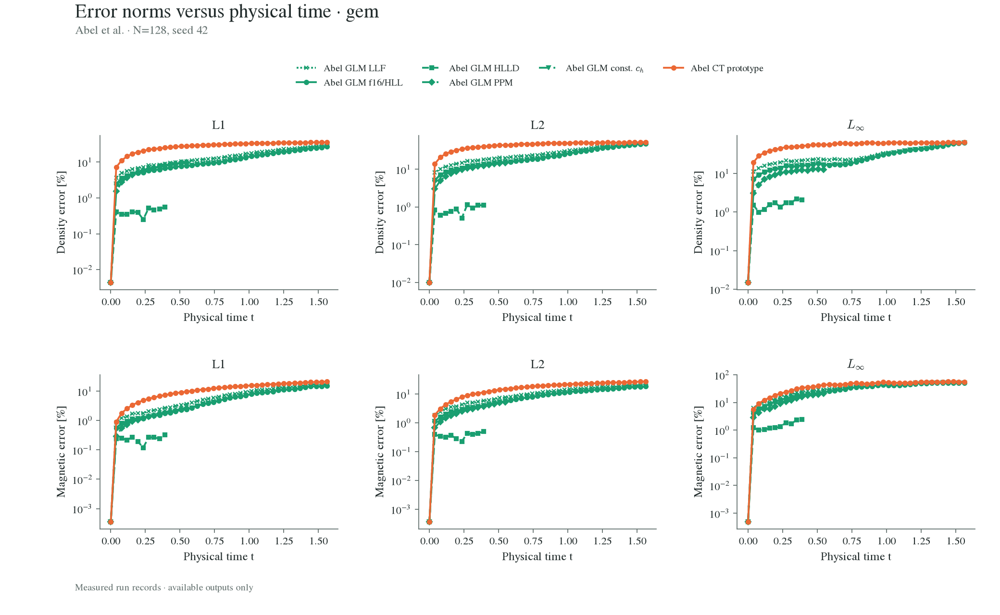
Relative L1, L2, and Linf use the matching reference norm; zero-field blasts use absolute magnetic error. Magnetic error is a vector difference. Markers are outputs, not a complete history when sparse. Symlog axes preserve zeros. Reference: AthenaK 4096² → 128.
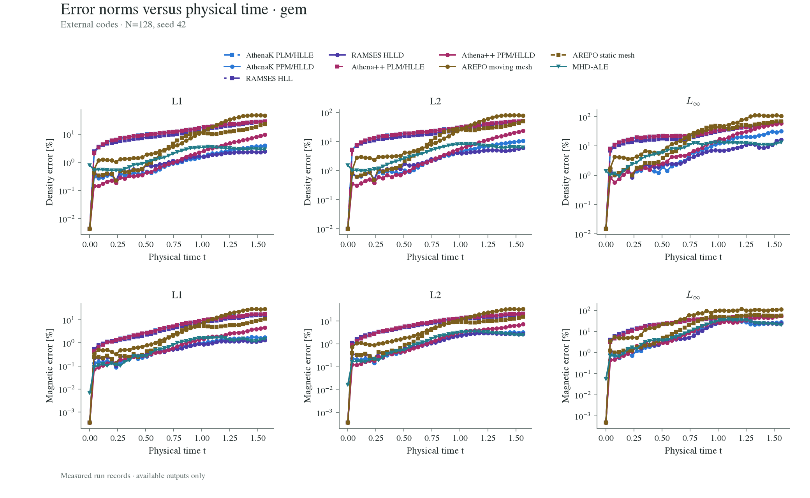
Relative L1, L2, and Linf use the matching reference norm; zero-field blasts use absolute magnetic error. Magnetic error is a vector difference. Markers are outputs, not a complete history when sparse. Symlog axes preserve zeros. Reference: AthenaK 4096² → 128.
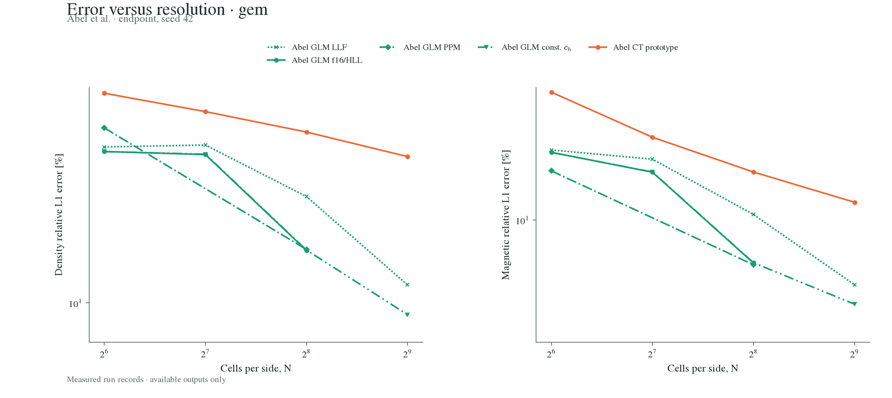
Only completed, finite runs at the requested physical endpoint. Analytic and restricted high-resolution numerical references are labelled in the error-history figure. Numerical-reference convergence has not been established for every case.
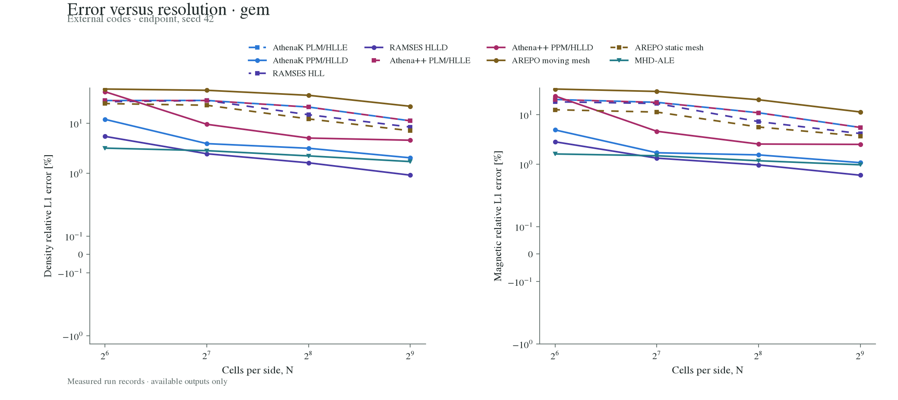
Only completed, finite runs at the requested physical endpoint. Analytic and restricted high-resolution numerical references are labelled in the error-history figure. Numerical-reference convergence has not been established for every case.
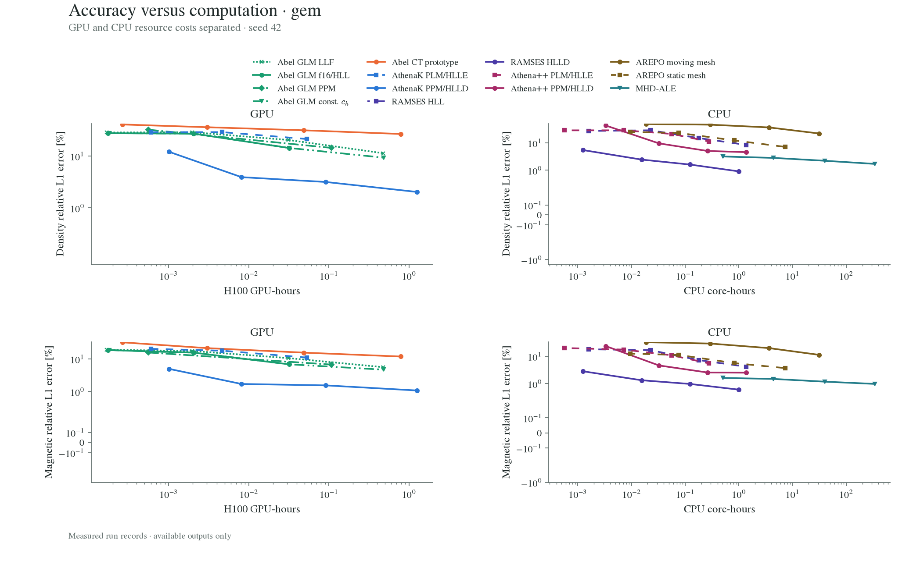
The same endpoint L1 errors as convergence. One H100 per GPU run; CPU costs use environment rank counts, or explicitly planned ranks when environment records are missing. Median valid completed repeats are used. GPU stepping+CFL and external evolution-loop timings have different output scopes; see run metadata.
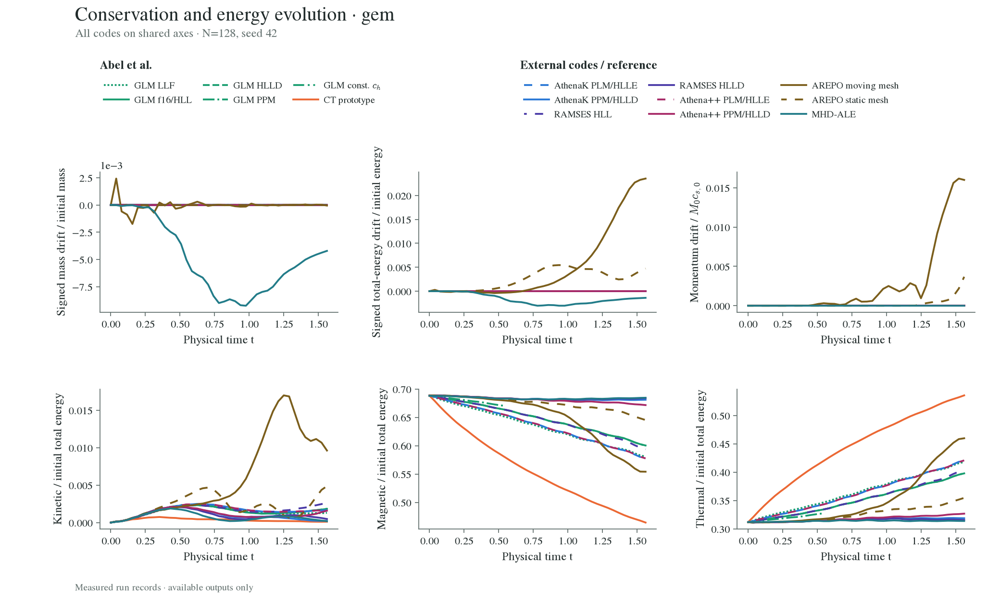
These sweep tests are periodic and unforced. Component energies may change physically; mass and total-energy drift reveal budget errors. Momentum uses initial mass × initial sound speed, so zero initial momentum is safe. Curves stop at the first nonfinite output.
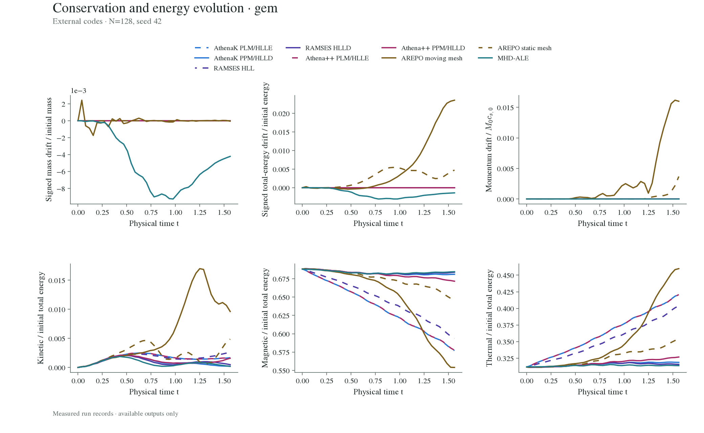
These sweep tests are periodic and unforced. Component energies may change physically; mass and total-energy drift reveal budget errors. Momentum uses initial mass × initial sound speed, so zero initial momentum is safe. Curves stop at the first nonfinite output.
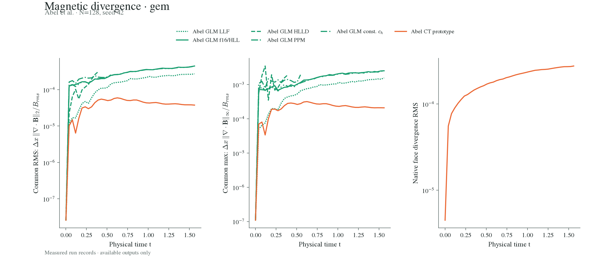
The common diagnostic uses the shared cell-centred operator. Native face divergence is shown separately in code units; it is not directly comparable to projected cell-centred divergence. AREPO and MHD-ALE projection/sampling can introduce divergence on the analysis grid.
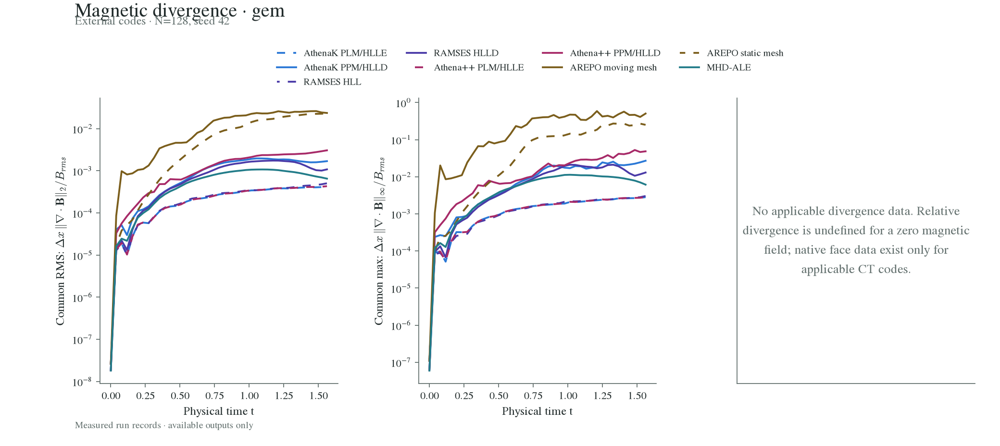
The common diagnostic uses the shared cell-centred operator. Native face divergence is shown separately in code units; it is not directly comparable to projected cell-centred divergence. AREPO and MHD-ALE projection/sampling can introduce divergence on the analysis grid.
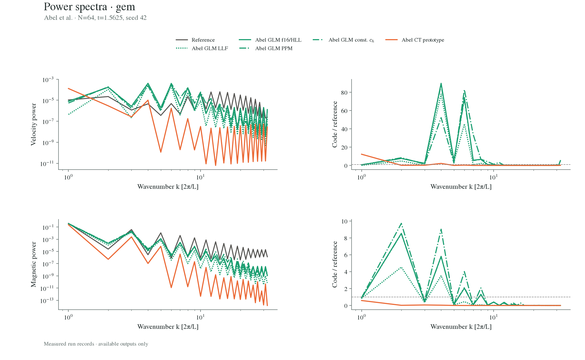
Shell-integrated power, round(|k|) bins, excluding the mean. For 3D, recorded full-volume spectra are used; 2D spectra come from actual plane states. Small reference power is excluded from ratios. AthenaK 4096² → 64 (restricted spectrum). Late chaotic flows need statistical interpretation.
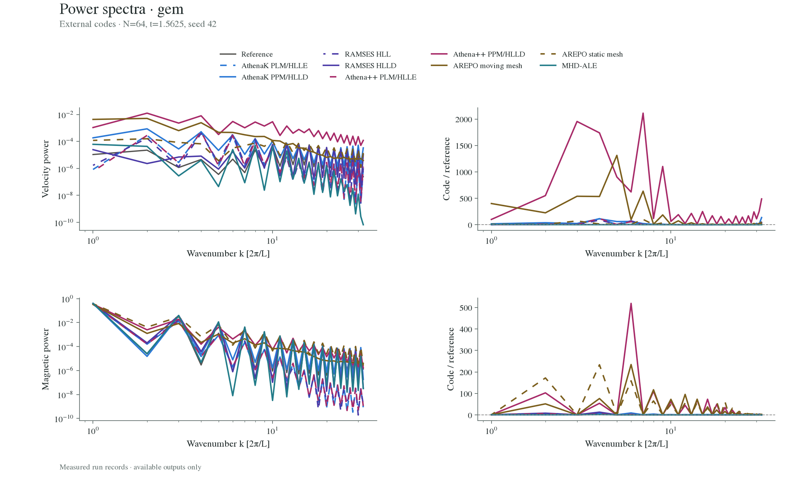
Shell-integrated power, round(|k|) bins, excluding the mean. For 3D, recorded full-volume spectra are used; 2D spectra come from actual plane states. Small reference power is excluded from ratios. AthenaK 4096² → 64 (restricted spectrum). Late chaotic flows need statistical interpretation.
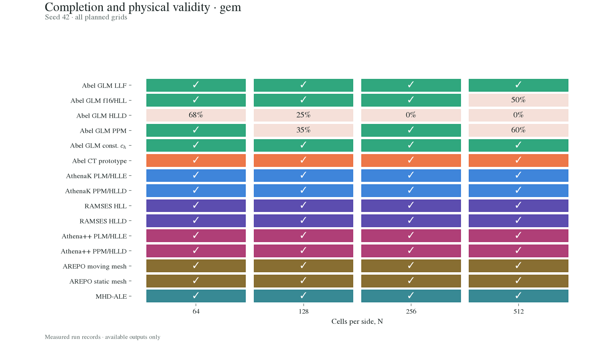
✓: complete and finite. Percentage: last finite physical time / requested time. Grey dot: no fetched record (not a solver failure). Other seeds and full status are available in the data table.
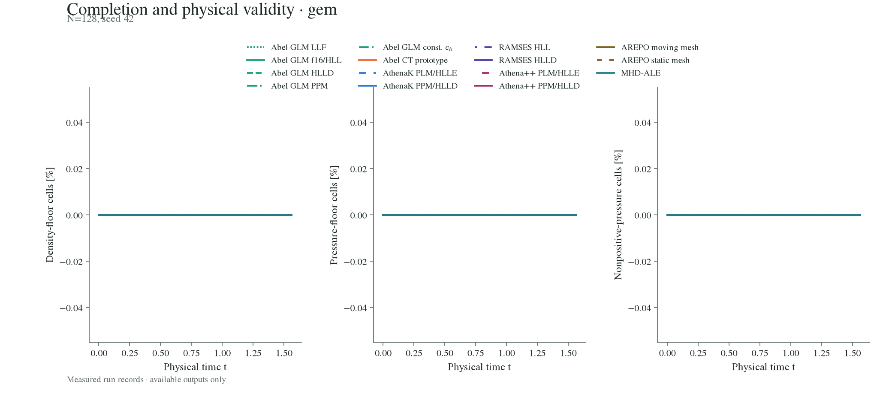
Fractions use the actual measured domain: Abel GPU diagnostics count N³ cells, including planar tests; external planar diagnostics count N² cells. Floor observations are sampled counts, not every internal intervention. Nonfinite tails are omitted.
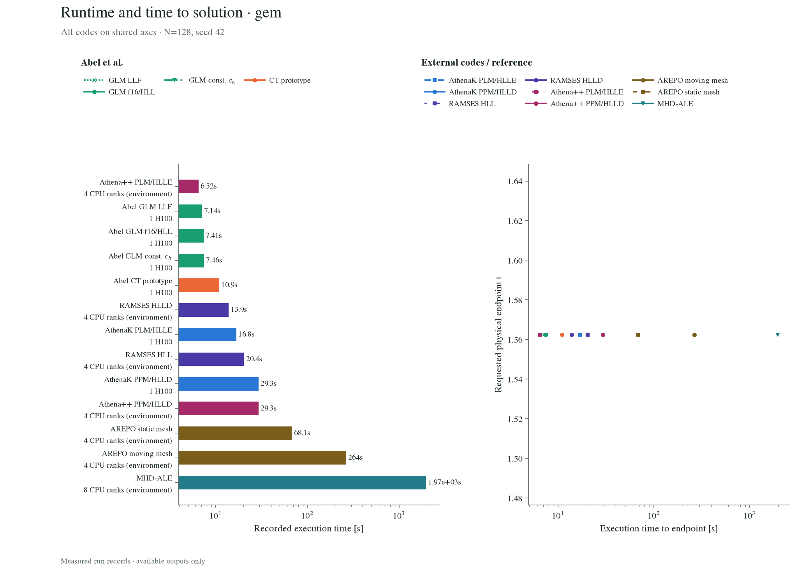
Solid: recorded solver/evolution-loop time. Hatched: measured additional wall time only for a single matched timing record. Endpoint dots are measured; no intermediate wall-clock progress is inferred. GPU and CPU ranks differ; resource and timing scopes appear in the run table.
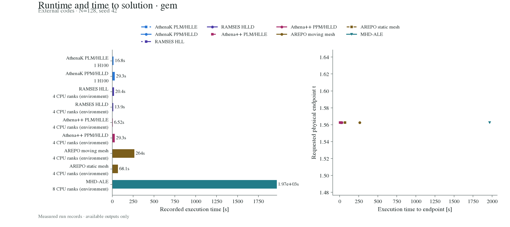
Solid: recorded solver/evolution-loop time. Hatched: measured additional wall time only for a single matched timing record. Endpoint dots are measured; no intermediate wall-clock progress is inferred. GPU and CPU ranks differ; resource and timing scopes appear in the run table.
Numerical data and run metadata (JSON) · Run table (CSV)
Build: .venv-movie/bin/python scripts/test_diagnostics.py gem. Runtime comparisons state each measurement scope; RAMSES II has throughput data only and is not a science curve here.